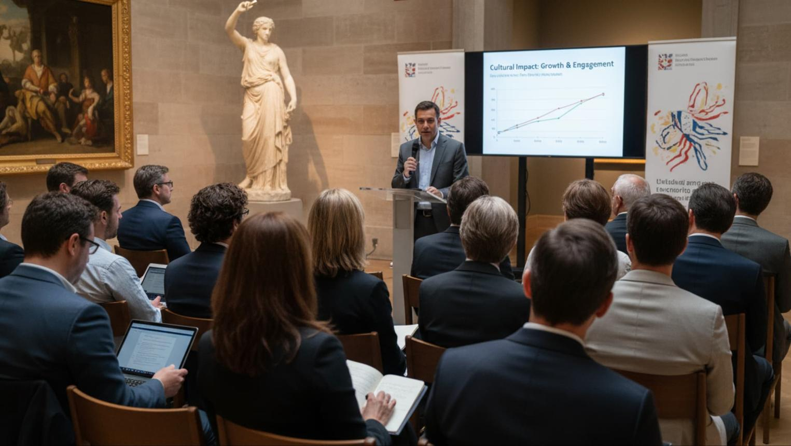
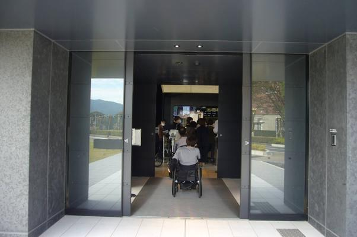
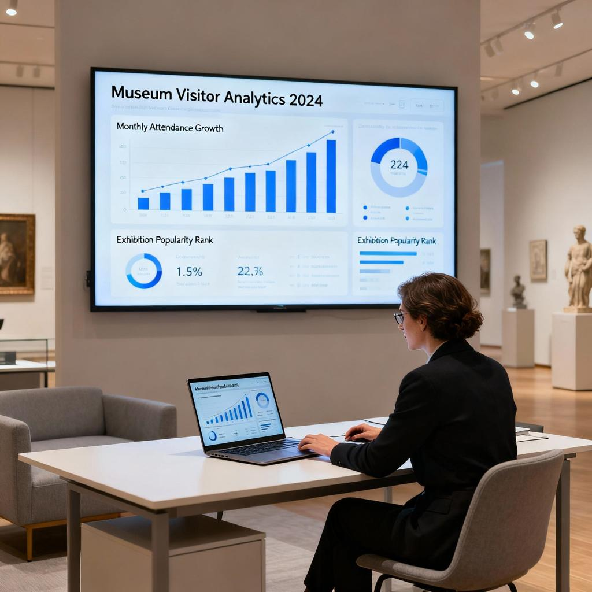
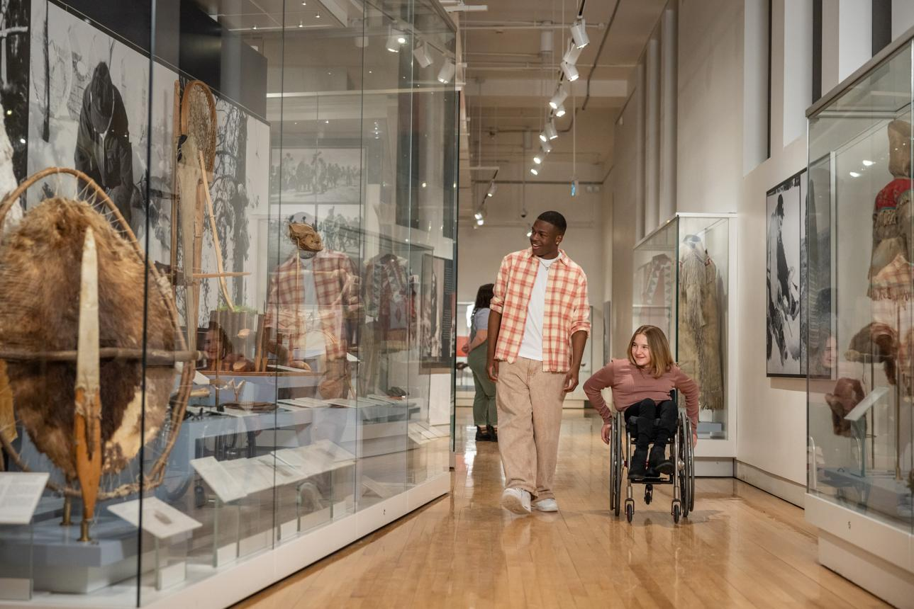
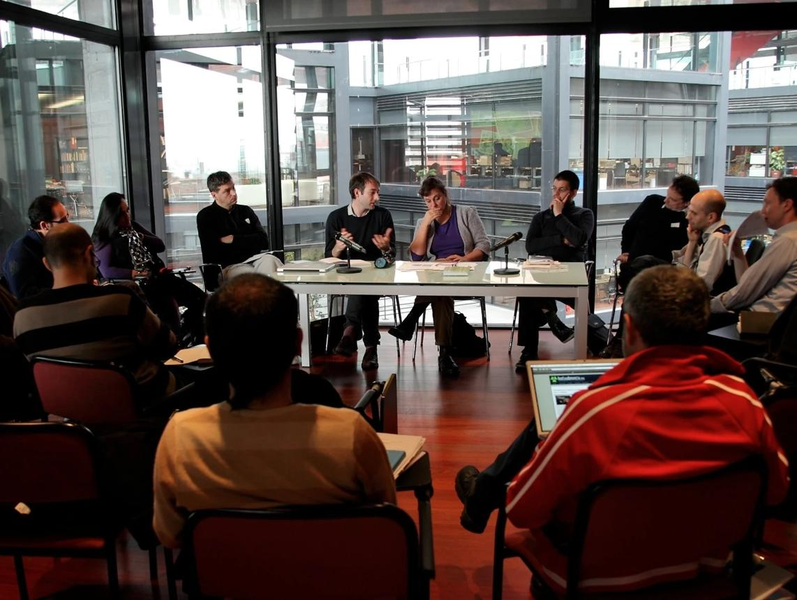
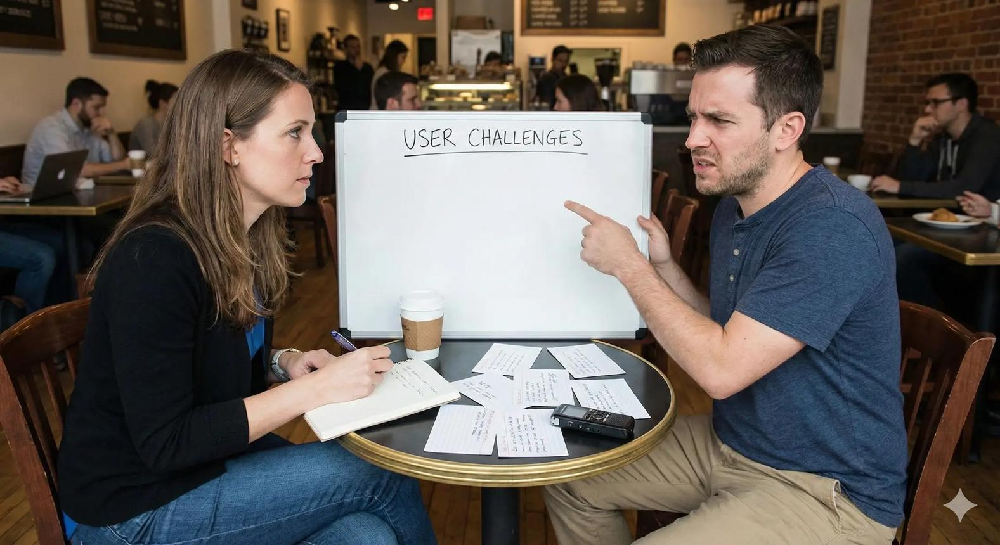

Heritage Signal OS is a first-of-its-kind AI complaint intelligence operating system that helps museums and heritage venues convert fragmented visitor complaints into explainable root-cause diagnosis, hidden accessibility-risk detection, operational interventions, and continuous service-improvement learning.
The MVP is designed to validate one thing first: that fragmented visitor complaints can be converted into structured, explainable operational intelligence that heritage venues can act on not theoretical AI dashboards.
Heritage Signal OS connects emails, surveys, reviews, social media, ticket-desk notes and accessibility reports into one closed-loop operational layer diagnosing root causes before they become repeat failures, not after.
Connects visitor complaints to journey stages, locations, ticket types, visitor segments and operational teams.

Reasoning EngineAnalyses complaint language alongside operational context staffing, events, ticketing, exhibitions to find true root causes.

Access RiskDetects implicit accessibility and inclusion issues even when visitors never use the word "accessibility".

Friction DNAScores every complaint pattern across emotional intensity, accessibility impact, safety, revenue and reputational risk.

Memory LoopTracks the corrective actions a venue takes and measures whether related complaints actually fall over time.

BenchmarkingCompares complaint patterns, friction trends and accessibility performance anonymously across participating venues.
The system learns from real operational interventions and outcomes not just static reporting after the fact.
Built around timed-entry admissions, school visits, memberships, guided tours and accessibility routes not generic CX categories.
Complaint patterns and intervention outcomes become a permanent operational asset that survives staff turnover.
Tiered SaaS pricing from £1,500/year gives small and medium venues the same intelligence multi-site national bodies rely on.
Ingests data from CRM, ticketing, survey and review platforms no need to replace your existing tech stack.
Identifies hidden access barriers early, supporting Equality Act compliance and stronger, more inclusive visitor experiences.
Heritage Signal OS is a UK-based SaaS company developing an AI-powered complaint intelligence and visitor experience optimisation platform for museums, heritage organisations, galleries, historic properties and cultural attractions converting fragmented visitor feedback into actionable operational insight.
Heritage Signal OS exists to help UK museums, heritage venues and visitor attractions convert unstructured visitor complaints into explainable root-cause intelligence, prioritised operational interventions, and closed-loop learning that reduces repeat failures, mitigates accessibility risks, and improves visitor satisfaction.
To become the global operating system for learning from visitor complaints in the cultural and heritage sector transforming fragmented feedback into measurable service excellence, accessibility safety, and trusted public experiences.
Every recommendation is explainable, showing the visitor comments and operational context that support it.
Inclusion risk detection is embedded in the core product, not bolted on as a compliance afterthought.
A heritage-specific ontology built around real visitor journeys, exhibitions and accessibility routes.
Every implemented intervention feeds back into the system, sharpening future recommendations.
UK GDPR-compliant architecture with explainable, auditable reasoning for every public-sector decision.
Validated in the UK heritage sector first, with a phased path to Ireland, Europe, Australia, Canada and the US.
Priya Monga brings more than ten years of customer engagement, complaint handling and quality-assurance experience, including a decade at Concentrix as a Quality Advisor monitoring service failures and coaching teams on complaint trends. She currently works as Customer Engagement Executive at the National Museum of the Royal Navy, giving her direct, first-hand exposure to museum operations, visitor journeys, accessibility considerations and the limitations of existing feedback-management processes. Her MSc in Project Management (University of Portsmouth) supports stakeholder management, risk identification and technology implementation as the platform scales. Technical architecture is led by CTO Oshada Eranga, a senior software engineer with five years' experience in scalable backend systems, Java/Spring Boot microservices and fintech-grade API integrations.
Priya's daily exposure to visitor complaints and feedback at a UK museum directly informed the concept behind Heritage Signal OS identifying a gap existing CRM, survey and reputation-monitoring tools simply weren't built to fill. CTO Oshada Eranga brings deep distributed-systems and API-management expertise, ensuring the platform scales securely across many venues and data sources.
A unified, closed-loop intelligence platform that converts fragmented visitor feedback emails, surveys, ticket-desk notes, reviews, social media and accessibility reports into structured operational diagnosis, prioritised interventions, and measured outcomes.
Sector-specific intelligence for national museums and museum groups managing high visitor volumes and complex feedback channels.
Affordable, evidence-based operational improvement for regional and local-authority museums with limited digital infrastructure.
Complaint intelligence tuned to historic buildings, accessibility routes and grounds-based visitor journeys.
Governance-ready reporting for heritage trusts and conservation organisations balancing public accountability and resource constraints.
Early-warning monitoring for visitor attractions and cultural venues navigating seasonal peaks and major exhibitions.
Cross-site benchmarking and centralised dashboards for multi-site heritage organisations and national bodies.
CSV upload, email-export ingestion, AI-powered complaint clustering, heritage-specific taxonomy, root-cause categorisation, accessibility-risk detection, manager correction loops, intervention tracking and monthly recommendation reports secured with 5–8 design-partner venues during Months 1–8.
Founder-led customer discovery and a structured pilot programme convert 3–5 early venues into paying contracts, with revenue generation beginning in Month 8.

Version 1.0 launches with basic API integrations, enhanced analytics dashboards, real-time operational monitoring and benchmarking functionality, growing the customer base from ≈10 to ≈42 organisations.
The anonymised benchmarking network goes live, comparing complaint patterns, Visitor Friction DNA and intervention effectiveness across participating institutions.
Version 1.5–2.0 adds early-warning operational alerts, predictive intervention recommendations and enterprise-grade governance controls, reaching ≈51 paying organisations and 15–20+ active benchmark participants.
International pilots begin in Ireland, Australia, New Zealand and Canada, with Western European localisation and US entry phased across Years 4–5+.
Recurring SaaS subscriptions, onboarding fees and premium add-ons across ≈51 paying venues by the end of Year 3.
Target reduction in repeat complaints by Year 3 through closed-loop intervention learning.
The UK's first heritage-sector complaint intelligence network, live by the end of Year 3.
The UK heritage sector contains 2,200+ museums, galleries, historic houses and visitor attractions. Heritage-related visitor spending reached £11.5bn (domestic day), £4.5bn (domestic overnight) and £12bn (international) in 2023 yet most organisations still manage feedback through fragmented spreadsheets and inboxes.
Annual revenue (£) vs. paying venues
Subscriptions, add-ons and onboarding fees (£)
Inputs fused into one intelligence layer
Capability Comparison (0–5 Scale)
| Capability | CRM & Helpdesk (Salesforce, Zendesk) | Survey Tools (Qualtrics, SurveyMonkey) | BI / Analytics (Power BI, Tableau) | Heritage Signal OS |
|---|---|---|---|---|
| Root-cause analysis | ✗ | ✗ | User-defined only | ✓ |
| Hidden accessibility-risk detection | ✗ | ✗ | ✗ | ✓ |
| Cross-channel complaint fusion | Limited | Very limited | Manual setup | ✓ |
| Intervention outcome tracking | Basic ticket closure | ✗ | ✗ | ✓ |
| Anonymised cross-venue benchmarking | ✗ | ✗ | Limited / manual | ✓ |
| Heritage-specific ontology | ✗ | ✗ | ✗ | ✓ |
| Real-time early-warning alerts | Limited | ✗ | Depends on setup | ✓ |
Annual SaaS subscriptions, priced by visitor volume, number of sites and operational complexity plus a one-off onboarding fee and optional premium intelligence modules.
Core complaint intelligence for small heritage venues CSV upload, clustering and monthly insight reports.
Multi-channel ingestion, root-cause reasoning, accessibility-risk detection and intervention tracking.
Cross-site benchmarking, centralised dashboards, role-based access and enhanced reporting.
Full API integrations, governance controls, custom taxonomies and board-level reporting.
Onboarding fee: 25% of first-year subscription · Premium intelligence add-ons available from Year 2
Whether you run a single historic house or a national museum group, our team will walk you through how Heritage Signal OS fits your venue's complaint and accessibility workflows.